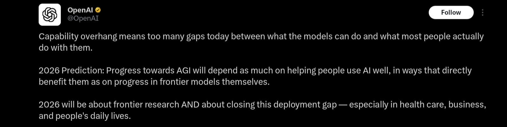
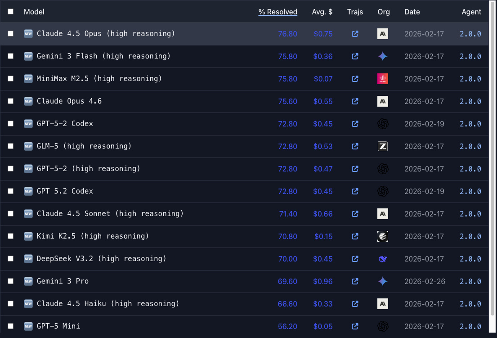

The Intelligence Company
AI 2026:
A döntés éve
Pereczes János | Portfolio AI in Business | 2026. március 18.

The Intelligence Company
Pereczes János | Portfolio AI in Business | 2026. március 18.
Aki most kiábrándul, az a legrosszabb pillanatban áll le. A tech kész — a kérdés az, ki veszi észre időben.
"2025 was supposed to be the year of agents. So far it's been the year of letdowns."
— Chamath Palihapitiya, 2025
Forrás: OpenAI Enterprise AI Report 2025 (9K worker), MIT GenAI Divide 2025

A modellek többre képesek, mint ahogy használjuk. A gap a használatban van.
Az AI-úton annyira fontos segíteni jól használni, mint a modellek fejlesztése.
Nézzük meg konkrétumok szintjén.
Nézzünk rá másik szemszögből.
Saját példám: Claude API €2,700/hó — 26x szubvenció

Forrás: SWE-bench Verified 2026, Építési Napló #7
AI-specifikus adatközponti kapacitás (MW)
Nincs dedikált szuverén AI-infrastruktúra
És mi lesz az emberekkel?
Forrás: Andrej Karpathy, "AI Exposure of the US Job Market", 2026. március 15.
Junior pozíciók eltűnnek. Nincs kontextus, nincs hely.
Hiring freeze. Csendes leépítés. Block kimondta hangosan.
Lassabban, de jön. Csapatméretek mindenhol csökkennek.
"Nem az AI veszi el a junior állást. A senior veszi el, aki AI-t használ."
Kerülj a K tetejére. 2 nap befektetés, azonnali hatás.
Ne foltozás. Szervezd újra a munkát és az adatokat.
"2 órás beszélgetés alatt teljes appot raktunk össze."
Országosan kell. Nekünk van kutatásunk erre.
The Intelligence Company
Építési Napló
epitesinaplo.substack.com